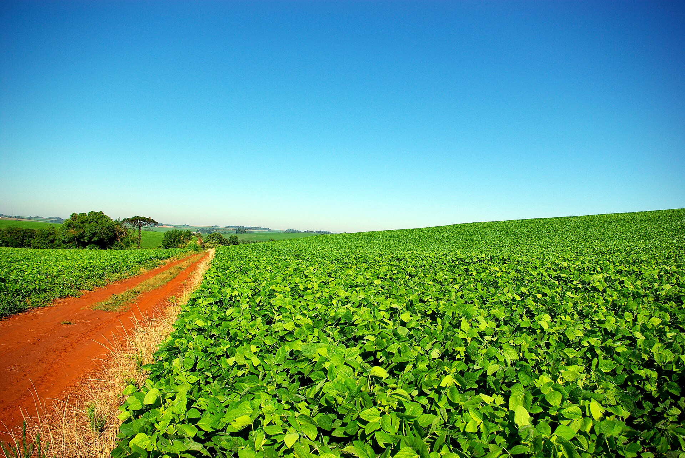
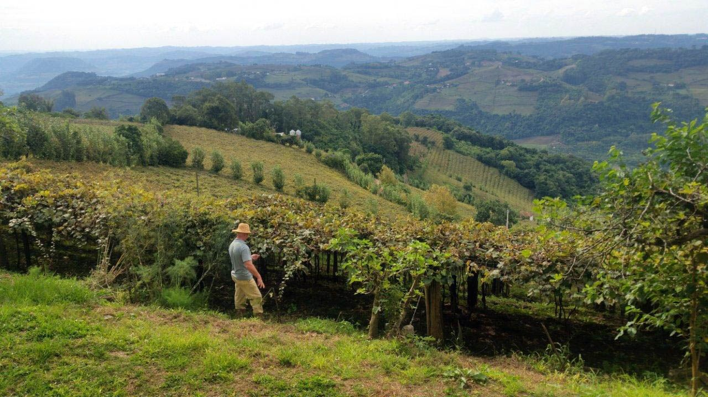
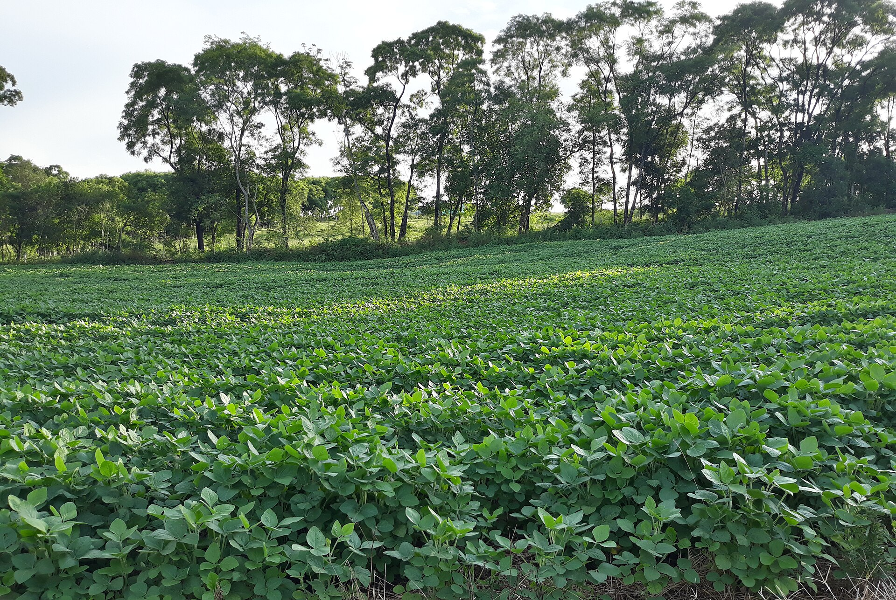
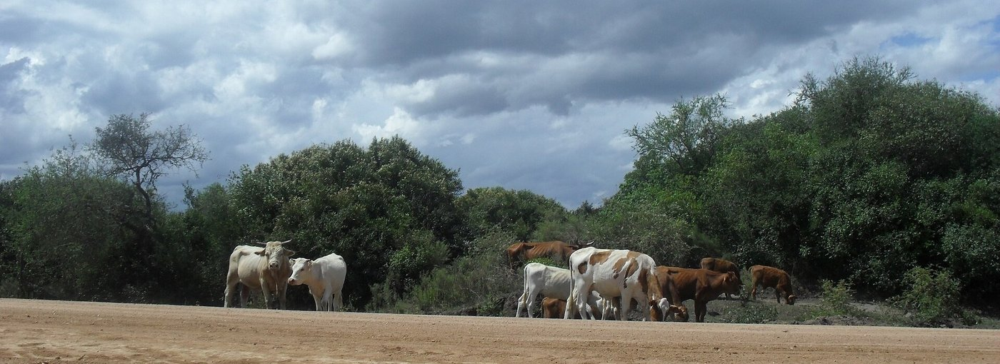
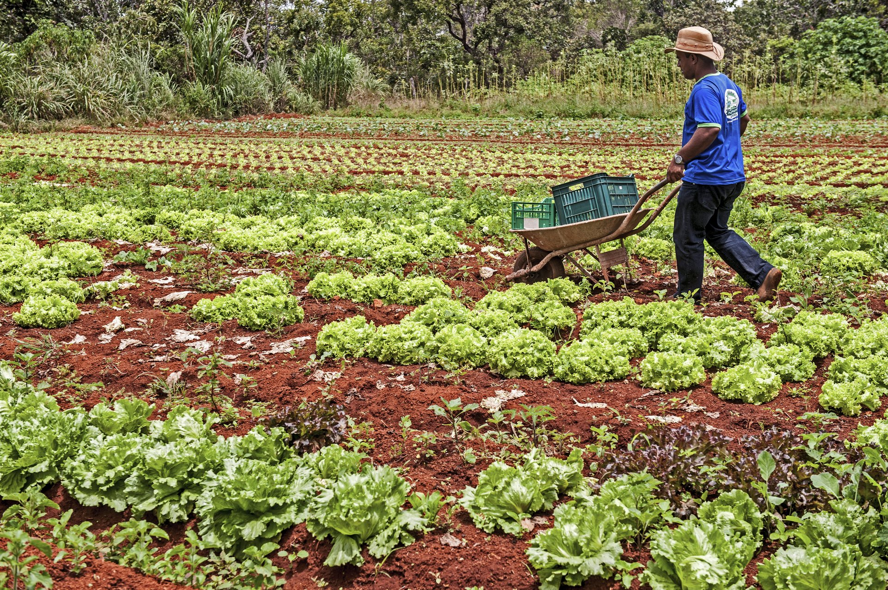
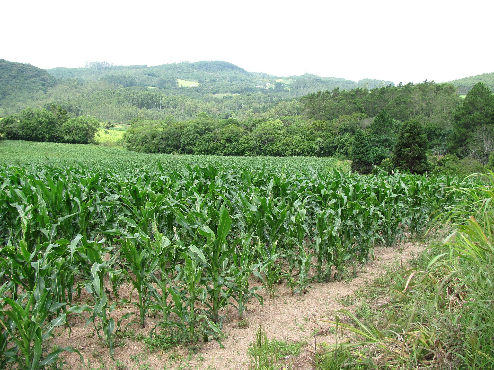
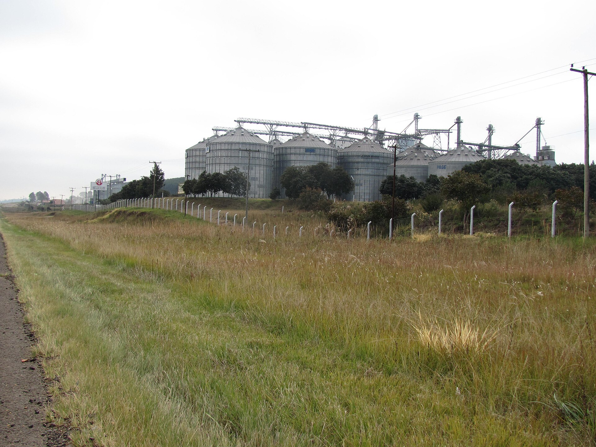
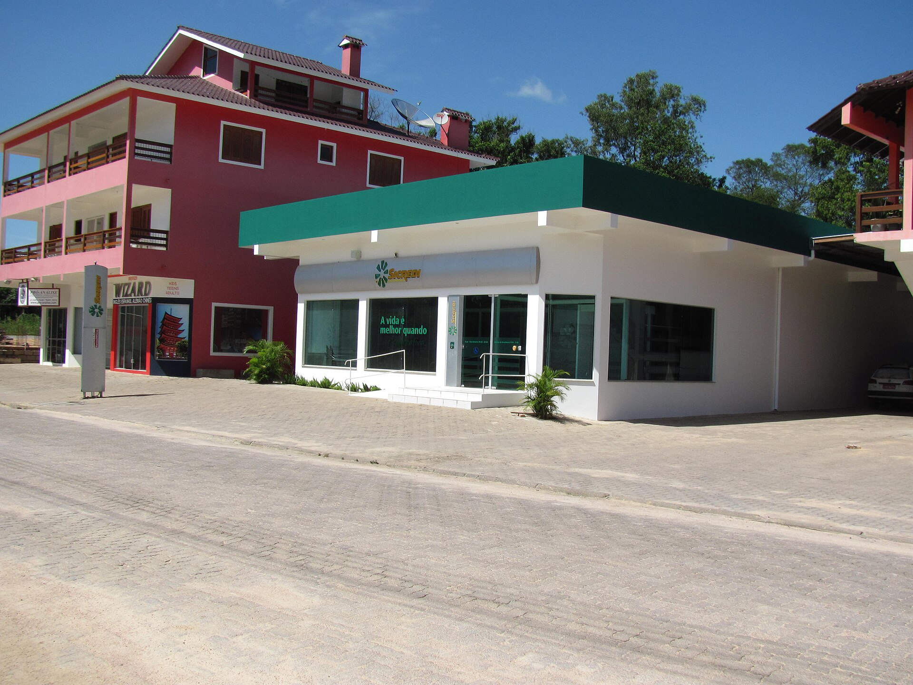

Decisão do produtor e desempenho da propriedade
Duas vizinhas, dois resultados
Duas propriedades lado a lado, separadas por uma cerca. Mesmo solo, mesmo clima, mesma safra.
No fim do ano, os resultados não se parecem. O que explica a diferença?

24 estudos sobre decisão e desempenho
Uma revisão sistemática reuniu os estudos empíricos publicados entre 2013 e 2022 que ligam a forma como o produtor decide ao resultado da propriedade (Taramuel-Taramuel, Montoya-Restrepo e Barrios, 2023).
- Busca nas bases Scopus e Web of Science: 1.764 documentos, dos quais 24 atenderam aos critérios.
- Metade estuda pecuária, sobretudo leite. A outra metade, lavouras e frutas: arroz, café, trigo, batata, citros, cacau, hortaliças.
- Um terço vem da África. Da América do Sul, há estudos do Brasil e da Argentina.
A revisão organiza em seis grupos os fatores que pesam na decisão. Eles são o centro desta aula.
Decidir é um processo, não um momento
- Planejar: definir o problema e analisar as alternativas.
- Executar: pôr em prática o caminho escolhido.
- Avaliar e controlar: comparar o que aconteceu com o plano e corrigir os desvios.
Na prática o processo nem sempre segue essa ordem. O produtor busca informação e escolhe com base nela, na experiência, nos objetivos e na intuição.
Colher mais não é o mesmo que ganhar mais
Eficiência técnica: tirar o máximo de produto dos insumos usados. Eficiência econômica: considerar também os preços e escolher a combinação que dá o melhor resultado em dinheiro.
| Vizinha | sc/ha | Custo/ha | Receita/ha | Custo por saca | Margem/ha |
|---|---|---|---|---|---|
| A | 62 | 6.200,00 | 8.060,00 | 100,00 | 1.860,00 |
| B | 55 | 4.950,00 | 7.150,00 | 90,00 | 2.200,00 |
A colheu mais. B produz cada saca R$ 10,00 mais barata e fica com R$ 340,00 a mais por hectare.
Soja a R$ 130,00 por saca; valores de exemplo, em R$. Os estudos da revisão medem o desempenho dos dois jeitos: produtividade e eficiência técnica de um lado, lucro e margem do outro.
Seis grupos de fatores pesam na decisão
Os autores juntam o que influencia a decisão do produtor em seis grupos. Todos passam pelo processo de decisão antes de chegar ao resultado da propriedade.
A seguir, um grupo de cada vez, com um exemplo do RS. Adaptado da Fig. 1 de Taramuel-Taramuel, Montoya-Restrepo e Barrios (2023).
O que a propriedade é muda devagar
Tamanho, localização, tecnologia disponível e quanto a família depende da renda da propriedade.

Objetivos, atitudes, experiência
O que o produtor quer, como encara o risco, o que já viveu e quanto confia na intuição.

Nem todo objetivo é dinheiro
Bem-estar animal, qualidade de vida, tempo livre, tempo com a família e reputação entre os vizinhos também pesam.

De onde vem a informação, e o que se faz com ela
Quem o produtor consulta, o que anota e como avalia o resultado das decisões.

O que não se controla, mas se enfrenta
Clima, pragas e processos biológicos. A revisão os põe entre os fatores fora do controle do produtor.

O que está em volta da propriedade
Preços, assistência técnica, cooperativas e programas de governo. No RS: EMATER/RS-Ascar, cooperativas de produção e de crédito, sindicatos rurais, Pronaf e Pronamp.

O dinheiro que falta e o que é oferecido
Custo do crédito, acesso a financiamento, subsídios e incentivos.

Quatro dos seis grupos estão, ao menos em parte, na mão dele
| Grupo | Controla? | Por quê |
|---|---|---|
| 1 · Características da propriedade | em parte | muda devagar: comprar, arrendar, investir |
| 2 · Atributos pessoais e comportamentais | em grande parte | objetivos e atitudes se escolhem; idade não |
| 3 · Gestão da informação | sim | quem consultar, o que anotar, como avaliar |
| 4 · Ambiente biofísico | não | escolhe só como se proteger |
| 5 · Condições socioeconômicas e políticas | não | mas escolhe usar: cooperativa, assistência, programas |
| 6 · Restrições econômicas e incentivos | em parte | escolhe se e como se endividar |
O artigo aponta como fora do controle do produtor o clima, os processos biológicos, as pragas e a variação de preços. A divisão dos seis grupos em sim, em parte e não é uma leitura para discussão.
Quais três vocês poriam no topo?
| Princípio | Votos | |
|---|---|---|
| 1 | Ter objetivos e um plano para o negócio | |
| 2 | Registrar e usar o registro para decidir | |
| 3 | Conferir o resultado de cada decisão | |
| 4 | Decidir olhando o lucro, não só a produção | |
| 5 | Proteger o caixa contra o ano ruim | |
| 6 | Acompanhar o mercado e garantir onde vender | |
| 7 | Comparar-se com outros produtores | |
| 8 | Aprender com técnicos e com outros produtores | |
| 9 | Ter sucessor definido | |
| 10 | Conhecer o custo completo de cada atividade |
| Princípio | O que os estudos encontraram | Base | |
|---|---|---|---|
| 1 | Objetivos e plano | Ligados a resultado melhor em leiterias da Finlândia e da Grã-Bretanha e em propriedades inglesas.Mäkinen, 2013; Vanhuyse, Bailey e Tranter, 2021; O'Leary et al., 2018 | vários |
| 2 | Registrar e usar | A favor entre floricultores e em citros de SP. A revisão chama a ligação de não conclusiva.Trip et al., 2002; Carrer et al., 2015 | divergentes |
| 3 | Conferir o resultado | Monitorar e avaliar foram as etapas que mais pesaram entre floricultores. Na Finlândia, a efetividade da gestão não se ligou ao lucro.Trip et al., 2002; Mäkinen, 2013 | divergentes |
| 4 | Olhar o lucro | Ter noção da lucratividade se ligou a mais eficiência na Suécia; objetivos de negócio, ao lucro na Grã-Bretanha.Hansson, 2008; O'Leary et al., 2018 | poucos |
| 5 | Proteger o caixa | Na seca de 2006 e 2007, as fazendas que resistiram gastaram com prudência e mantiveram diversidade, que reduziu a dívida em relação à renda. 123 fazendas australianas acompanhadas de 2004 a 2009.Lawes e Kingwell, 2012 | poucos |
| Princípio | O que os estudos encontraram | Base | |
|---|---|---|---|
| 6 | Mercado e onde vender | Informação de preço e um canal alternativo elevaram o preço da soja na Índia. Contrato de longo prazo se ligou a mais eficiência em citros de SP.Goyal, 2010; Carrer et al., 2015 | poucos |
| 7 | Comparar-se | Em 5.945 leiterias da Irlanda, quem usou a comparação financeira em mais anos teve o maior aumento de lucro de 2010 a 2018.Ramsbottom, Läpple e Pierce, 2021; Vanhuyse, Bailey e Tranter, 2021 | poucos |
| 8 | Aprender com outros | Assistência técnica ligada a menor custo em granjas de frango de Gana. Grupos de discussão ligados a margem e lucro maiores na Irlanda, mas os melhores produtores entram mais nos grupos.Dziwornu, 2017; Hennessy, Läpple e Newman, 2011; Hennessy e Heanue, 2012; Hansson, 2008 | vários |
| 9 | Sucessor definido | Mais investimento na Nova Zelândia e mais estratégias na Europa. Na Itália, o desempenho por capital caiu nos primeiros anos após a passagem.Wright e Brown, 2019; Bertolozzi-Caredio, 2024; Bertoni, Cavicchioli e Latruffe, 2017 | divergentes |
| 10 | Custo completo | Nenhum estudo localizado testa isso diretamente. Usar relatórios contábeis para decidir se ligou a resultado melhor na Catalunha; o tipo de sistema contábil, à lucratividade em Nova York.Argilés-Bosch e Slof, 2003; Gloy, Hyde e LaDue, 2002 | indireta |
O que esses estudos ainda não conseguem dizer
- A maioria é transversal: olha as propriedades num momento só. Poucos acompanham as mesmas propriedades ao longo dos anos.
- Quase nenhum é experimental. Sem experimento, fica difícil separar causa de coincidência.
- Quem entra num grupo de discussão já tende a ser um produtor melhor (Hennessy, Läpple e Newman, 2011). O grupo melhora o produtor, ou o bom produtor procura o grupo?
- Onde não há registro, o desempenho é medido pelo que o próprio produtor declara.
A revisão buscou artigos em inglês, publicados de 2013 a 2022, nas bases Scopus e Web of Science.
Por que tantos produtores não registram nada?
A revisão aponta essa pergunta como lacuna: ainda falta entender por que produtores não mantêm registros.
- Registrar dá trabalho, e o retorno demora a aparecer.
- Na Catalunha, usar relatórios contábeis compensou na propriedade média, mas não nas muito pequenas (Argilés-Bosch e Slof, 2003).
- O registro sozinho não decide: precisa virar comparação e avaliação (Trip et al., 2002).
E na propriedade de vocês, o que se anota, e o que se faz com o que é anotado?
- TARAMUEL-TARAMUEL, J. P.; MONTOYA-RESTREPO, I. A.; BARRIOS, D. Drivers linking farmers' decision-making with farm performance: a systematic review and future research agenda. Heliyon, v. 9, n. 10, e20820, 2023. DOI: 10.1016/j.heliyon.2023.e20820.
- ARGILÉS-BOSCH, J. M.; SLOF, J. The use of financial accounting information and firm performance: an empirical quantification for farms. Accounting and Business Research, v. 33, n. 4, p. 251-273, 2003. DOI: 10.1080/00014788.2003.9729653.
- BERTOLOZZI-CAREDIO, D. The farm succession effect on farmers' management choices. Land Use Policy, v. 137, 107014, 2024. DOI: 10.1016/j.landusepol.2023.107014.
- BERTONI, D.; CAVICCHIOLI, D.; LATRUFFE, L. Performance post succession on Italian family farms. In: XV EAAE Congress, Parma, 2017. Disponível em: AgEcon Search, registro 261435.
- CARRER, M. J.; SOUZA FILHO, H. M.; BATALHA, M. O.; ROSSI, F. R. Farm Management Information Systems (FMIS) and technical efficiency: an analysis of citrus farms in Brazil. Computers and Electronics in Agriculture, v. 119, p. 105-111, 2015. DOI: 10.1016/j.compag.2015.10.013.
- DZIWORNU, R. K. Does managerial ability really drive cost efficiency? Evidence from broiler businesses. Managerial and Decision Economics, v. 38, n. 6, p. 731-741, 2017. DOI: 10.1002/mde.2810.
- GLOVER, J. L.; REAY, T. Sustaining the family business with minimal financial rewards: how do family farms continue? Family Business Review, v. 28, n. 2, p. 163-177, 2015. DOI: 10.1177/0894486513511814.
- GLOY, B. A.; HYDE, J.; LADUE, E. L. Dairy farm management and long-term farm financial performance. Agricultural and Resource Economics Review, v. 31, n. 2, p. 233-247, 2002. DOI: 10.1017/S1068280500004032.
- GOYAL, A. Information, direct access to farmers, and rural market performance in Central India. American Economic Journal: Applied Economics, v. 2, n. 3, p. 22-45, 2010. DOI: 10.1257/app.2.3.22.
- HANSSON, H. How can farmer managerial capacity contribute to improved farm performance? A study of dairy farms in Sweden. Food Economics: Acta Agriculturae Scandinavica, Section C, v. 5, n. 1, p. 44-61, 2008. DOI: 10.1080/16507540802172808.
- HANSSON, H.; MANEVSKA-TASEVSKA, G.; ASMILD, M. Rationalising inefficiency in agricultural production: the case of Swedish dairy agriculture. European Review of Agricultural Economics, 2018. DOI: 10.1093/erae/jby042.
- HENNESSY, T.; HEANUE, K. Quantifying the effect of discussion group membership on technology adoption and farm profit on dairy farms. The Journal of Agricultural Education and Extension, v. 18, n. 1, p. 41-54, 2012. DOI: 10.1080/1389224X.2012.638784.
- HENNESSY, T.; LÄPPLE, D.; NEWMAN, C. The economic returns to membership of a dairy discussion group: evidence from the Irish National Farm Survey. In: 85th Annual Conference of the Agricultural Economics Society, Coventry, 2011. Disponível em: AgEcon Search, registro 108784.
- LAWES, R. A.; KINGWELL, R. S. A longitudinal examination of business performance indicators for drought-affected farms. Agricultural Systems, v. 106, n. 1, p. 94-101, 2012. DOI: 10.1016/j.agsy.2011.10.006.
- MÄKINEN, H. Farmers' managerial thinking and management process effectiveness as factors of financial success on Finnish dairy farms. Agricultural and Food Science, v. 22, n. 4, p. 452-465, 2013. DOI: 10.23986/afsci.8147.
- O'LEARY, N. W.; BENNETT, R. M.; TRANTER, R. B.; JONES, P. J. The extent that certain dairy farmer attitudes and behaviors are associated with farm business profitability. Journal of Dairy Science, v. 101, n. 12, p. 11275-11284, 2018. DOI: 10.3168/jds.2017-14307.
- RAMSBOTTOM, G.; LÄPPLE, D.; PIERCE, K. M. Financial benchmarking on dairy farms: exploring the relationship between frequency of use and farm performance. Journal of Dairy Science, v. 104, n. 3, p. 3169-3180, 2021. DOI: 10.3168/jds.2020-18843.
- TRIP, G.; THIJSSEN, G. J.; RENKEMA, J. A.; HUIRNE, R. B. M. Measuring managerial efficiency: the case of commercial greenhouse growers. Agricultural Economics, v. 27, n. 2, p. 175-181, 2002. DOI: 10.1016/S0169-5150(02)00035-X.
- VANHUYSE, F.; BAILEY, A.; TRANTER, R. Management practices and the financial performance of farms. Agricultural Finance Review, v. 81, n. 3, p. 415-429, 2021. DOI: 10.1108/AFR-08-2020-0126.
- WRIGHT, W.; BROWN, P. Succession and investment in New Zealand farming. New Zealand Economic Papers, v. 53, n. 2, p. 203-214, 2019. DOI: 10.1080/00779954.2017.1419501.
Material didático elaborado pelo Prof. Róberson Macedo de Oliveira, Colégio Politécnico da UFSM, com apoio de inteligência artificial (Claude, Anthropic) na busca e conferência das referências, na organização didática e na diagramação. O conteúdo pedagógico, a metodologia e as decisões de planejamento são de responsabilidade do docente.
Versão impressa deste material: Ctrl+P.